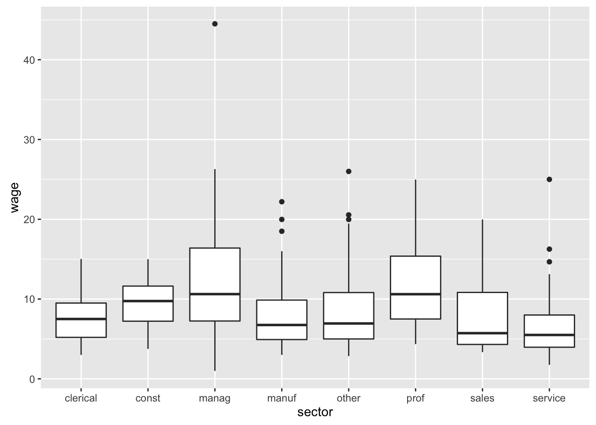

In the previous chapter, you graphed a summary of the CPS85 data like that shown in the figure: counts of people working in each sector of the economy. In this exercise, you’re going to add new aethetics to the bars and facet the graph.
union. To do this, fill in the blank following fill: with the variable that is to be mapped to the fill aesthetic.sex. To do this, complete the formula argument to the facet_grid() function.library("statisticalModeling")
library("ggplot2")
data(CPS85, package = "mosaicData")
gf_counts( ~ sector + fill:___, data = CPS85) + facet_grid( ~ ___)library(statisticalModeling)
library(ggplot2)
data(CPS85, package = "mosaicData")
gf_counts( ~ sector + fill:union, data = CPS85) + facet_grid( ~ sex)test_1 <- fcall("gf_counts()", "use 'gf_counts()' to make the frame of the plot.")
test_2 <- in_statements("~ *sector", "use a one-sided formula with 'sector' on the right hand side of the tilde.", regex = TRUE)
test_3 <- fcall("sector + fill:union", "the formula for 'gf_counts()' should include an aesthetic 'fill:' which should be mapped to 'union'.")
test_4 <- fcall("facet_grid()", "use facet_grid() to split up the graph into facets.")
test_5 <- in_statements("facet_grid\\( +~ +sex *\\)", "the faceting should be done by sex; use a one-sided formula with sex on the right hand side.", regex = TRUE)
USER_CODE %>% test_1 %>% test_2 %>% test_3 %>% test_4 %>% test_5In general, aesthetics such as color, size, fill, etc. are mapped to variables by adding into the formula a component in the form aesthetic:variable.
By running the code in the box, you’ll re-create the graphic you made in the last exercise. Do that now, pressing “run” rather than “submit.” You should see a U-shaped pattern in the graph: at low birth rates, as birth rate increases from one country to another the death rate goes down. But for high birth rates, increasing birth rate is associated with increasing death rate.
The tragic factor behind this pattern is overall health in each country. In countries with good health, the death rate is largely shaped by the age distribution in the country. In such countries, a high birth rate is associated with a younger population, hence one with a lower death rate. (Example: Mexico, which has a much lower death rate than its neighbor, the US) In countries with poor health, the death rate is high. But at the same time, women in those countries have many children who, often, have a high mortality rate.
The graphic, as it is, does not incorporate the overall health of countries, so it’s not possible to compare the hypothesis in the previous paragraph with the data.
life) is one measure of a country’s overall health. Map life to the glyph color in the plot. Do this by adding on to the formula: + size:life.library("statisticalModeling")
library("ggplot2")
data(CountryData, package = "DataComputing")
# first plot: add color as an aethetic and map it
# to the life expectancy variable.
gf_point(death ~ birth, data = CountryData)test_1 <- fcall("gf_point(whatever, data = CountryData)", "use gf_point() for the body of the plot")
test_2 <- fcall("birth + color:life", "map the life variable to the size aesthetic by adding on to the formula the term '+ color:life'.")
USER_CODE %>% test_1 %>% test_2# The formula will have two parts on the right-hand side of the tilde:
# `death ~ birth + color:life`library("statisticalModeling")
data(CountryData, package = "DataComputing")
gf_point(death ~ birth + color:life, data = CountryData)Many design choices in graphic design are a matter of mapping variables to the aesthetic properties of glyphs. In the gf_ function formulas, the variable on the left of the tilde determines the variable mapped to y. The first variable on the right sets the variable to be mapped to x. Then other aesthetics are set by pairs in the form aethetic:variable, for instance size:life or color:life.
gf_boxplot(wage ~ sector, data = CPS85)## Warning in plyr::split_indices(scale_id, n): '.Random.seed' is not an
## integer vector but of type 'NULL', so ignored
In the previous chapter, you made a box-and-whisker plot like that shown in the graphic. In this exercise, you’re going to refine the graphic by adding in facets and aesthetics.
Recreate the graphic with these two additional features: - Add a term to the formula that maps the variable sex to the fill aethetic. You do this by adding a term of the form + fill:sex - Facet the plot by the variable union. You do this by adding a new command at the end: + facet_grid( ~ union)
library(______) # for statisticalModeling package
data(_____, package = ________) # for CPS85 data table from mosaicData package
# re-create the graphic
gf_boxplot( ... your arguments here ...)library("statisticalModeling")
data(CPS85, package = "mosaicData")
gf_boxplot(wage ~ sector + fill:sex, data = CPS85) + facet_grid( ~ union)# add fill:sex to the gf_boxplot() formula# facet the plot by "adding" an instruction after the gf_boxplot()
# command: gf_boxplot(... your arguments ...) + facet_grid( ~ union)test_1 <- fcall("library()",
"use the library() function to attach the \"statisticalModeling\" package.")
test_2 <- has_constants("statisticalModeling",
message = "it's the \"statisticalModeling\" package you want to attach with library().")
test_3 <- fcall("data(CPS85, whatever)",
"access the CPS85 dataset with data")
test_4 <- fcall("data(whatever, package = \"mosaicData\")",
"CPS85 is in the \"mosaicData\" package.")
USER_CODE %>% test_1 %>% inside %>% test_2 %>% then %>% test_3 %>% test_4
test_5 <- fcall("gf_boxplot()", "use gf_boxplot() as the main plotting function.")
test_5a <- fcall("whatever + whatever", "Use '+' to add the faceting to the boxplot.")
test_6 <- fcall("facet_grid()", "use the facet_grid() function.")
test_7 <- has_formula(test = match_formula(~ union),
"the formula for faceting should be ~ union")
test_8 <- has_formula(test = match_formula(wage ~ sector + fill:sex),
"aethetics formula is missing something.")
USER_CODE %>% test_5 %>% test_5a %>% test_6 %>% test_7 %>% test_8Whether or not your new graphic is good depends on what you’re trying to show. This one puts the wages of men and women next to each other for each sector, which is good for comparing wages between the sexes. But for other purposes it might be appropriate to put side by side the wages for union and non-union workers, or to facet by sector. Different arrangements of the data can reveal different aspects of the data.